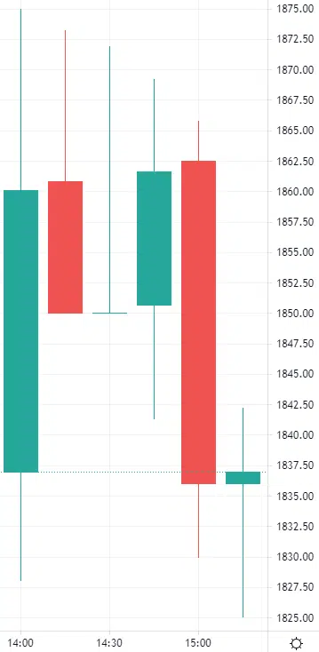

Candlestick charts include many candlesticks that display four important aspects of a share's price in a given time frame: the opening price, closing price, highest price, and lowest price.

Each candlestick typically consists of two parts:
Body: The fat middle part, is the most crucial part of the candlestick. It represents the gap between the opening and closing prices. The body of Bullish (rising) candlesticks with an opening price lower and closing price higher, is usually green or filled. Bearish (declining) candlesticks, on the other hand, often have a red or hollow body, representing a higher opening price and a lower closing price..
Shadow/Wick: These lines are seen above and below the body, depicting the highest and lowest prices during the time frame. However, depending on the price actions, not every candlestick may have two wicks.
Example: Consider six candlesticks of Adani Enterprises within a 15-minute timeframe. The first candlestick, green in color, shows that it opened at Rs 1837 and closed at Rs 1860.10, indicating a rising trend. The highest price in these 15 minutes was Rs 1875, and the lowest price was Rs 1828, all these details are shown via wicks.

The second candlestick starts at Rs 1860.80, closes at Rs 1850.10 and is red, indicating a price decline. Here, the closing price and lowest price coincide, so there is no bottom wick.
The third candlestick has no body as the opening price and closing price are the same. The explanation of the rest of the candlesticks is straightforward from these examples.